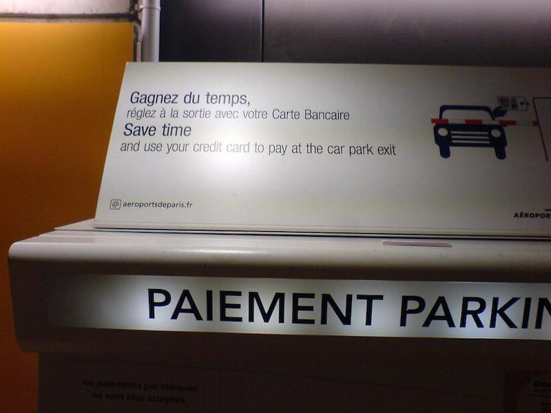

Hidden premises are risky.
 Paris Orly Airport, August 2013, Image credit: RC
You may hide only as much, and if you are caught in the act, blame on
you. Your entire communication strategy collapses. Honesty is not a
decoration in the process of communication.
In parking lots at Paris airports, you are billed by the hour. Each hour
started is due. At 4 euros to the hour, it makes a difference for you if
you stay 58 minutes or 62; each of those extra minutes costs you two
euros. We all used to pay before collecting our car. Now we are asked to
pay at the exit gate. Suppose it took you ten minutes to get from the
automated cashiers to the gate, there is a chance in six that you are
one of those customers who will pay an extra hour.
The communication strategy is that you will end up saving time. But
time, in this context, is money that you do not save. Why not tell,
instead, that it is preferable not to have people for too long in the
parking lot after they have payed?